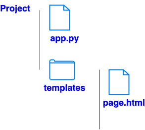

# app.py
import os
from flask import Flask, render_template, Response, url_for
import matplotlib.pyplot as plt
import matplotlib
import io
matplotlib.use('Agg')
app = Flask(__name__)
@app.route('/')
def get_page():
return render_template('page.html')
@app.route('/plot.png')
def get_plot():
fig, ax = plt.subplots()
ax.plot([1, 2, 3, 4], [10, 5, 8, 12])
buf = io.BytesIO()
fig.savefig(buf, format='png')
buf.seek(0)
return Response(buf.getvalue(), mimetype='image/png')
if __name__ == '__main__':
app.run(port = 8080)
# page.html
<!doctype html>
<html>
<body>
<h1>Plot</h1>
<img src = "{{ url_for('get_plot') }}" alt='plot'>
</body>
</html>
import plotly.express as px
from flask import Flask, Response, render_template_string
app = Flask(__name__)
@app.route('/')
def home():
fig = px.line(x=[1, 2, 3], y=[4, 1, 2], title='Simple Line Plot')
graph_html = fig.to_html(full_html=False)
return render_template_string("""
<html><body>
<h1>Plotly Plot</h1>
{{ plot | safe }}
</body></html>
""", plot=graph_html)
if __name__ == '__main__':
app.run(port=8080)